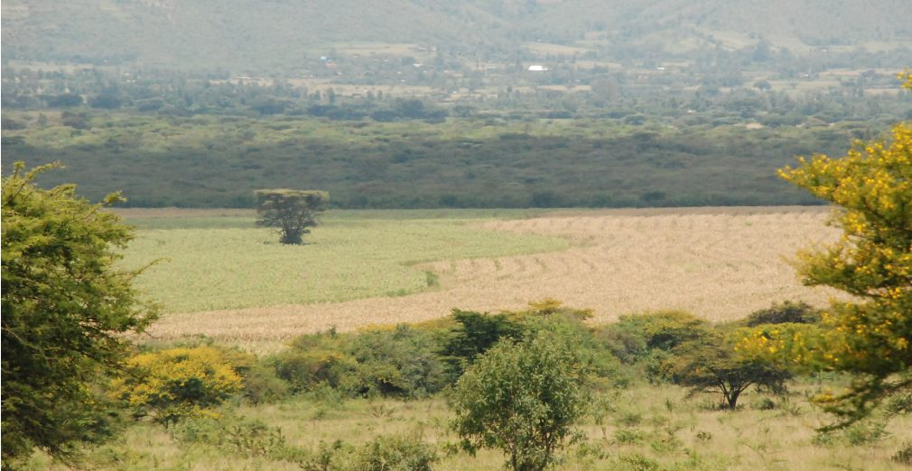
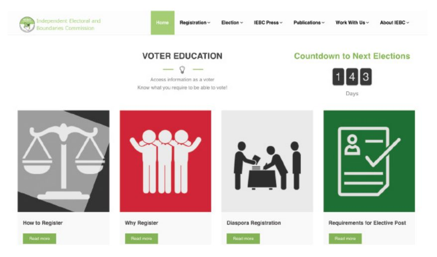
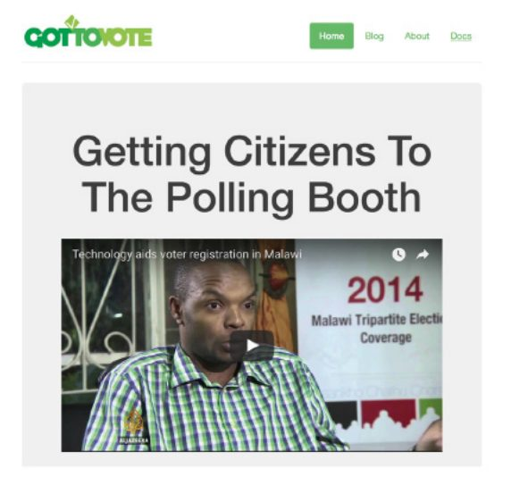

در راستای انتخابات عمومی سال ۲۰۱۳ کنیا، کمیسیون مستقل انتخابات و مرزهای این کشور (IEBC) اطلاعاتی را در مورد موقعیت مراکز رایگیری در وبسایت خود منتشر کرد. با این حال، دسترسی به اطلاعات دشوار بود، که نشاندهنده شکاف گستردهای است که در دسترس قرار دادن دادهها و در واقع قابل استفاده کردن آنها را از هم تفکیک میکند.
در پی پر کردن این شکاف، دو عضو نظامی و کلیدی کنیا، یک ابتکار نوآوری در حکومت، ولی آزمایشی را انجام دادند که هدف آن باز کردن قفل دادههای دولتی و مفیدتر ساختن آن برای عموم بود. برای رسیدن به این هدف، آنها دادههای IEBC را بررسی کردند و یک وبسایت ساده ساختند که دسترسی به آن آسانتر بود. نتیجه نسخه اولیه GotToVote (gottovote.cc) بود، سایتی که اطلاعات مرکز ثبتنام رایدهندگان را در اختیار شهروندان قرار میداد و همچنین به آنها کمک میکرد تا بتوانند در دنیای گاه پیچیده رویههای ثبتنام پیش بروند. اولین نسخه، در مدتزمانی کوتاه با هزینه صفر توسعه یافت.
پیشینه و زمینه
تمرکز بر مسئله / زمینه کشور
جمهوری کنیا کشوری با ۴۲.۷ میلیون نفر جمعیت است که در ساحل شرقی آفریقا واقع شدهاست. کنیا اقتصاد گستردهای دارد، با بالاترین میزان تولید ناخالص داخلی (GDP) در شرق و مرکز آفریقا. علیرغم این مسئله، این کشور با مسائلی همچون میزان بیکاری بالا، فقر و جرم و جنایت، دست و پنجه نرم میکند. فساد بخش عمومی نیز یک چالش است: سازمان شفافیت بینالملل در زمینه شاخص ادراک فساد (CPI) در سال ۲۰۱۶، کنیا را از میان ۱۶۸ کشور در رتبه ۱۳۹ قرار داد، شاخصی که سطوح درک شده از فساد بخش عمومی را ارزیابی میکند. این رتبهبندی، کنیا را پایینتر از کشورهایی مانند بنگلادش و ایران و حتی پایینتر از دیگر کشورهای آفریقایی جنوب صحرا مانند نیجریه، تانزانیا و اتیوپی قرار میدهد.
در دسامبر ۲۰۰۷، کنیا یک انتخابات ریاست جمهوری با رقابت شدید برگزار کرد که به اختلاف و اعتراض انجامید. خشم ناشی از تقلب و دستکاری در روند انتخابات به سرعت به یک بحران ملی تبدیل شد که مشخصه آن درگیری و خشونت، از جمله خشونت هدفمند قومی بود. در طی این بحران ۱۴۰۰ نفر کشته و ۶۰۰، ۰۰۰ نفر از خانههای خود آواره شدهاند. پس از چند ماه، پس از مداخله کوفی عنان، دبیر کل سابق سازمان ملل، قطعنامهای صادر شد. یکی از اهداف اصلی این قطعنامه، تعیین نوع پیشبرد روند اصلاحات برای غلبه بر تقسیمات سیاسی و جلوگیری از دستکاری انتخاباتی بود.

از جمله مهمترین اصلاحات، تهیه پیشنویس مجدد قانون اساسی کنیا بود، که شامل ترسیم مجدد مرزهای حوزه انتخابیه و تهیه یک کمیسیون برای تعیین مرزها و انتخابات مستقل ملی جدید (IEBC) بود. این کمیسیون در سال ۲۰۱۱ با هدف "برگزاری انتخابات آزاد و عادلانه و نهادینه کردن یک فرآیند انتخاباتی پایدار" تاسیس شد. یکی از اولین وظایف IEBC ثبتنام مجدد همه رایدهندگان کنیایی بر اساس مرزهای حوزه انتخابیه جدید که در قانون اساسی جدید تعیین شده بود، میباشد. بر این اساس، روند ثبتنام رایدهندگان توسط IEBC در نوامبر ۲۰۱۲ آغاز شد و ۱۹ میلیون نفر به ثبت رسیدند.
به منظور دستیابی به اهداف بلندپروازانه ثبتنام، IEBC در اواخر نوامبر ۲۰۱۲، یک ماه پیش از اتمام مهلت ثبتنام رایدهندگان، اطلاعاتی را در مورد موقعیت مراکز رایگیری در وبسایت خود منتشر کرد. این اطلاعات حیاتی در نظر گرفته شدند چرا که مرزهای حوزه انتخاباتی دوباره ترسیم شدهبودند و رایدهندگان باید میدانستند کجا باید ثبتنام کنند. با این حال، در حالی که انتشار دادههای IEBC یک مرحله مهم را نشان میداد، دسترسی به دادهها در واقع بسیار پیچیده بود: خود وبسایت تقریبا در دسترس نبود، و اطلاعات در قالب PDF فراهم میشدند. علاوه بر این، دانلود اطلاعات به دلیل اندازه بزرگ فایل دشوار بود. همانطور که جی بهالا، مدیر اجرایی موسسه Open، یک سازمان حاکمیت گسترده در کنیا، میگوید: " این پرونده آنقدر بزرگ بود که دانلود آن برای مردم عادی کنیا روزها طول میکشید. و هنگامی که آنها این سند را باز میکردند، تنها چیزی که مییافتند، لیستها و جداول پیچیده مراکز حوزه انتخابیه بود."
در این مرحله بود که یکی از کدها برای کنیا و توسعهدهنده اصلی تیم توسعه نرمافزار تصمیم گرفتند با هدف دسترسی بیشتر به دادهها وارد شوند و قفل آنها را باز کنند. مداخله آنها باعث پیدایش سایت اینترنتی GotToVote! شد.
فعالان اصلی
ارائهدهندگان دادههای کلیدی
دو مجموعه داده در نهایت برای پروژه GotToVote!: هر دو در وبسایت IEBC در دسترس عموم قرار گرفتند. مجموعه داده اول شامل اطلاعات محل مرکز رایگیری ملی بود و مجموعه داده دوم اسامی رایدهندگان ثبتنامشده را نشان داد.
کاربران و واسطههای دادههای کلیدی
شهروندان کنیایی که میخواهند محل اخذ رای خود را تعیین کرده تا برای رای دادن ثبتنام کنند، کاربران اصلی دادهها هستند. کاربران دیگر شامل اعضای تیم تعیین قوانین کنیا بودند که دادهها را بررسی کردند، وبسایت GotToVote را ایجاد کرده، و دادهها را بر روی وبسایت GotToVote آپلود کردند. Code for Kenya یک "آزمایشگاه غیردولتی فناوری مدنی و ابتکار روزنامهنگاری داده" است که از ابزارهای دیجیتالی برای ارائه "اطلاعات قابل اجرا" به شهروندان عادی و اطلاعرسانی قویتر در مورد مسائل مربوط به منافع عمومی استفاده میکند. Code for Kenya دادهها را باز میکند، ابزار ارائه میدهد و از پیشرفت حمایت میکند. کد کنیا به عنوان یک برنامه آزمایشی با بودجه بانک جهانی آغاز شد، با ابتکار رسانه آفریقا (AMI) که به عنوان حامی مالی امانتدار عمل میکرد. برنامه آزمایشی شامل چهار مجموعه داده بود که در اتاقهای خبری اصلی کنیا و سازمانهای جامعه مدنی به مدت پنج ماه در تلاش برای شروع آزمایش با ابزارهای مشارکت مدنی مبتنی بر دادهها قرار گرفتند. تیم کد کنیا نیز شامل چهار توسعهدهنده نرمافزار بود. موسسه Open که در بالا به آن اشاره شد نیز با تحت فشار قرار دادن افراد تیم کد کنیا پشتیبانی میشد. پس از راهاندازی اولیه GotToVote!، Code for Kenya به یکی از اعضای موسسCode for Africa، «فدراسیون آزمایشگاههای فناوری مدنی و روزنامهنگاری داده» تبدیل شد که اکنون این ابتکار را مدیریت میکند.
ذینفعان کلیدی دادهها
شهروندان کنیایی که میخواهند برای رای دادن ثبتنام کنند، محل اخذ رای محلی خود را تعیین کنند، یا پاسخهای مربوط به فرآیند ثبتنام را دریافت کنند، از این پروژه بهرهمند خواهند شد. IEBC، که محرک ثبتنام رایدهندگان آن توسط دادهها تسهیل شد، یکیدیگر از ذینفعان بود.
شرح پروژه
آغاز

(https://www.iebc.or.ke/)
در اواخر نوامبر ۲۰۱۲، سیمون اوریکو، همکار Code for Kenya، وارد حساب توئیتر خود شد و دید که IEBC اطلاعات مرکز رایدهندگان را در وبسایت خود به اشتراک گذاشتهاست. او همچنین متوجه شد که دسترسی به این اطلاعات دشوار است. او به سرعت با یکی از همکاران خود، دیوید لمیان، در مورد انتشار اطلاعات و مشکلات دسترسی تماس گرفت. با توجه به سومین Code for Kenya، موچیری نیاگاه، که مدیریت GotToVote! را بر عهده داشت، آنها تصمیم گرفتند اطلاعات را به یک صفحه گسترده تبدیل کنند. آنها برای این کار برنامهریزی نکرده بودند. این ایده کاملا فرصتطلبانه بود.
آقای اوریکو و آقای لمیان داده مرکز رایگیری را دانلود کردند، آن را بررسی کرده و یک وبسایت ساده ساختند. آنها زمانی را صرف تصمیمگیری در مورد یک نام کردند، و احساس کردند که باید نامی برای دامنه خریداری کنند. در نهایت، آنها GotToVote را انتخاب کردند و به سرعت نسخه اولیه سایت را ساختند، که دسترسی و استفاده از دادههای IEBC را برای شهروندان آسانتر کرد. برای مثال، به جای دانلود و پیمایش یک فایل PDF پرحجم، کاربران میتوانند شهرستان یا حوزه انتخابیه خود را از فهرست کشویی انتخاب کنند و فورا بیابند که در کجا باید ثبتنام کنند.
دیوید لمیان، یکی از سازندگان این سایت میگوید: " من تمام شب را بیدار ماندم تا آن را بسازم." صبح روز بعد، آقای اوریکو و آقای لمایان سایت را توییت کردند و بلافاصله مورد توجه قرار گرفت. آقای نیاگاه با اشاره به طریقه استفاده از سایت و سهام در رسانههای اجتماعی میگوید: " این کار در آن روزهای اول واقعا خوب بود." آقای لمیان میگوید: " افرادی مانند دکتر ایوانز کیدرو، فرماندار فعلی، از این سایت استفاده میکردند و آن را به اشتراک میگذاشتند." " افراد مشهور از آن استفاده میکردند و در مورد آن صحبت میکردند." در کل، GotToVote در طول هفته اول حدود ۶۰۰۰ بازدید دریافت کرد. بعد از این موفقیت اولیه، GotToVote با سازمان Mercy Corpsایالاتمتحده همکاری کرد تا ویژگیهایی را که به کاربران اجازه میداد تا پیامهای دوستانه را از طریق GotToVote! دریافت کرده و ارسال کنند و همچنین بتوانند پیامکهای کوتاه رایگان بفرستند اضافه کند. هدف از این ویژگی ترویج محیطهای انتخاباتی و پس از انتخابات صلحآمیز بود که پس از خشونتهای انتخابات ۲۰۰۷ به شدت احساس شد.
علاوه بر ابزار SMS صلحآمیز، GotToVote یک ویژگی اضافه کرد که به کاربران کمک کند تا مرکز ثبتنام رای دهندگان را از طریق نگاشت دادهها همراه با دادههای مرتبط منتشر شده توسط IEBC به نزدیکترین آنها پیدا کنند. یکی دیگر از ویژگیهای جدید، مرور کلی فرآیند ثبتنام، با توضیح این که چه کسی واجد شرایط ثبت است، و چه اسناد و مدارک و مواد دیگری مورد نیاز است، را فراهم کرد.
همه این تلاشها موفقیتآمیز نبودند. به عنوان مثال، نقشه IEBC که مرزهای به تازگی تغییریافته را نشان میدهد را نمیتوان در GotToVote همانطور که انتظار میرفت، تلفیق کرد. این نقشه در نتیجه قرارداد IBEC-Google دارای مشکلات اختصاصی بود که به معنای قفل شدن سایر کاربران نیز بود.
در حالی که اولین تکرار GotToVote بر کمک به ثبتنام شهروندان متمرکز بود، تکرار دوم، پس از پایان ثبتنام گسترده IEBC در ۱۹ دسامبر ۲۰۱۲، با هدف بسیج مردم برای رای دادن در انتخابات مارس ۲۰۱۳ و سپس تحلیل نتایج بعد از انتخابات، توسعه یافت. در اینجا، GotToVote با سازمان حقوق بشر هلندی، Hivos، همکاری کرد و برای دسترسی به داده از Ushadih مستقر در کنیا، یک شرکت نرمافزاری غیرانتفاعی که نرمافزار آزاد و منبع باز را توسعه میدهد، ترتیب داد. اگرچه این مشارکتها با مجموعهای از موانع مواجه شدند (به بخش موانع در زیر نگاه کنید)، اما آنها دومین GotToVote! را ایجاد کردند. تکرار شامل یک ویژگی جدید پس از انتخابات بود که امکان دسترسی به نتایج رسمی انتخابات در شهرستانها و حوزههای انتخابیه محلی را فراهم میکرد و نتایج سطح محلی را با همپوشانی آنها با روندهای سطح محلی و گزارشهای رسمی تقلب یا بینظمی، در بافت مرتبط قرار میداد. این ویژگی برای مقابله با برخی از مشکلاتی که تمایل به غلبه بر دورههای پس از انتخابات داشتند، زمانی که تمرکز رسانهها تقریبا به طور منحصر به فرد بر نتایج رقابت ریاستجمهوری بود، اجرا شد، اما شهروندان عادی نیز اخبار مربوط به نتایج سطح محلی را میخواستند.

تصویر صفحه نخست GotToVote!
تقاضا و استفاده از داده
پایگاهداده GotToVote! کنیا شامل فهرستی از تمامی ۴۷ شهرستان کنیا، ۲۹۰ حوزه انتخابیه و ۱۴۵۰ بخش است که بر اساس منطقه اداری مرتب شده و شعب رایگیری در هر بخش به ترتیب حروف الفبا نیز فهرست شدهاند. تمام دادههای استفادهشده توسط GotTo-Vote! کنیا برای استفاده مجدد رایگان در پورتال openAFRICA، یکی دیگر از ابتکارات داده باز از Code for Africa در دسترس است. تقاضا برای این دادهها، ناشی از درخواست رایدهندگانی است که مایل به ثبتنام و / یا جستجو برای نزدیکترین ایستگاه رایگیری به آنها هستند. همچنین تقاضا از سوی کاربرانی میباشد که به دنبال اطلاعات اولیه آموزش رایدهندگان نیز هستند.
تاثیر
همانطور که اغلب در مورد پروژه های داده باز نسبتاً اخیر اتفاق می افتد، داده های بسیار کمی برای نشان دادن تأثیر GotToVote! وجود دارد. جدید بودن این پروژهها به افزایش میزان سختی آن کمک میکند. همانطور که آقای نیاگاه بیان کرد: "ارزیابی تأثیر دشوار است، زیرا ما دادههای پایه یا توالیدار برای مقایسه نتایج نداریم." با این وجود، اشکال خاصی از تاثیر مشهود بود.
حل مشکلات عمومی از طریق تعامل داده - محور
با توجه به محبوبیت آن، به نظر میرسد که GotToVote به بسیاری از کنیاییها کمک کردهاست تا با ارائه اطلاعات قابلدسترس در مورد محل جمعآوری آرای رایدهندگان، رای دهند. همانطور که گفته شد، سایت تقریبا ۶۰۰۰ بازدید در طول هفته اول پس از ایجاد دریافت کرد. اگرچه نه دادههای مبنا و نه داستانگونه برای زمینهسازی این اطلاعات و یا نشان دادن تاثیر واقعی بر حل مشکلات عمومی وجود ندارد، اما پیشنهاد میکند که سایت به عنوان مولفهای مفید درک شده و در واقع مورد استفاده قرار گرفتهاست.
موفقیت آشکار GotToVote در کمک به ثبتنام رایدهندگان نشان میدهد که منابع دادهباز را میتوان به سرعت و با حداقل هزینه برای فراهم کردن ابزارهایی که به شهروندان کمک میکند مشکلات عمومی واقعی را حل کنند، مورد استفاده قرار داد. یکی از قویترین گواهیهای مفید بودن سایت از خود IEBC است که بلافاصله پس از GotToVote یک فرم پلتفرم تقریباً یکسان ایجاد کرد! این سایت در این فرآیند به وضوح نشان داد که سیاستگذاران و رهبران دولتی پتانسیل عظیم این پروژه را به رسمیت شناختهاند. با قیمت ارزان، دادههای پیچیده را به اطلاعات "قابل اقدام" تبدیل کرده و سپس اطلاعات را برای موقعیت دقیق یک شهروند یا شرایط دیگر تنظیم کنید.
انتشار فرامرزی
بنا به گفته دیوید لمیان، یکی از بنیانگذاران، بسیاری از کشورهای جنوب صحرای آفریقا مشکلات مشابهی (و فرصتهایی برای حل و فصل مشکلات) را در زمینه نیاز به برگزاری انتخابات صلحآمیز و فراگیر به اشتراک میگذارند. او معتقد است که ابزاری مانند GotToVote! میتواند فراتر از زمینه کنیایی مرتبط باشد. او میگوید اگر به راههایی بپردازیم که میتوانیم ابزارهایی را انتخاب کنیم که در یک کشور کار میکنند و آنها را در کشورهای دیگر به کار ببریم، GotToVote به وضوح یکی از آنهاست.
از زمان راهاندازی آن، GotToVote! در واقع، در چندین کشور آفریقایی دیگر تکرار شده است - پدیدهای که به دلیل ماهیت منبعباز سایت اصلی امکانپذیر شده است. به عنوان مثال، Hivos، سازمان هلندی که با Code for Kenya برای راهاندازی سایت اصلی شریک شد، GotToVote را نیز به نمایش گذاشت! در زیمبابوه در آستانه انتخابات سراسری آن کشور در سال ۲۰۱۳. دیوید لمایان میگوید: «این واقعاً دلگرمکننده بود." این رخداد زمانی بود که ما یک نوع واکنش مشخص داشتیم، و متوجه شدیم که این کار در کشورهای مختلف آفریقا انجام میشود."
این سایت همچنین در مالاوی تکرار شدهاست، جایی که یک پلتفرم مشابه (http://gottovote.malawivote2014.org/) توسط مرکز اطلاعات انتخابات مالاوی، یک سازمان غیردولتی محلی، و کمیسیون انتخابات مالاوی اجرا شد. این طرح توسط دولت به عنوان راهحل رسمی ثبت رایدهندگان به تصویب رسید و برای ثبت ۷ میلیون شهروند مورد استفاده قرار گرفت. یکی از ویژگیهای متمایز پروژه مالاوی ویژگی پیامرسانی (SMS) بود که به کاربران این امکان را میداد تا پیامهایی حاوی شماره شناسایی رایدهندگان خود ارسال کنند و سپس پیامی را در پاسخ دریافت کنند که تایید میکرد آیا برای رای دادن ثبت شدهاند یا خیر. به طور کلی، ۴۰۰۰۰۰ نفر در مالاوی به اطلاعات ثبت با SMS و به صورت آنلاین دسترسی پیدا کردند. دیوید لمیان میگوید: " این نمایش فوقالعادهای بود."
همچنین در غنا تکرار شد، جایی که سازمان محلی اودکرو و تکنولوژیستهای مدنی امانوئل اوکییر و نهمیا به کد کنیا رسیدند و علاقه خود را به این فنآوری ابراز کردند. در حالی که اودکرو داده ایستگاههای رایگیری را دنبال کرد، کد کنیا به ارائه کمکهای فنی در این پروژه پرداخت. مورد غنا یک چالش (و فرصت) خاص را ارائه داد زیرا اطلاعات ایستگاههای رایگیری به صورت جداگانه در هر استان نگهداری میشد، بدون اینکه فهرست مرکزی داشته باشد. بنابراین اولین گام ایجاد اولین فهرست رایدهندگان ملی غنا بود که به کمیسیون انتخابات دولت تحویل داده شد. علاوه بر این، ماهیت دو طرفه عملکرد ارسال پیامک میتواند خطراتی را در مورد امنیت هرگونه اطلاعات شناسایی شخصی که توسط GotToVote نگهداری میشود ایجاد کند، اما به نظر میرسد چنین خطراتی در حداقل میزان خود هستند.
ریسکها
با توجه به اینکه این پروژه در درجه اول براساس ارائه اطلاعات و پیامهای صلح ساخته شدهاست، به نظر میرسد که خطرات تا حدودی محدود باشند. با توجه به پتانسیل ارائه اطلاعات نادرست یا مغرضانه به شهروندان در رابطه با فرآیند رایگیری، کیفیت دادهها از اهمیت بالایی برخوردار است. علاوه بر این، ماهیت دو طرفه عملکرد پیامک میتواند خطراتی را در مورد امنیت هر گونه اطلاعات شناسایی شخصی که توسط GotToVote نگهداری میشود ایجاد کند، اما به نظر میرسد چنین خطراتی حداقل هستند.
درسهای آموخته شده
چندین درس مهم با قابلیت کاربرد گسترده از این مطالعه موردی خاص حاصل میشود. این موارد را میتوان با در نظر گرفتن توانمندسازهای اصلی پروژه، و همچنین مهمترین موانع یا چالشهای موفقیتآمیز آن دستهبندی کرد.
توانمندسازها
مشارکت
اهمیت مشارکت شرکای محلی از همان ابتدا روشن بود. دیوید لمیان میگوید: " شما نمیتوانید فقط به یک کشور سفر کنید و مشکلات را حل کنید." "شما باید با شرکای محلی کار کنید." با این حال، او اضافه میکند که شرکای ملی، منطقهای یا بینالمللی نیز مهم هستند. در طول سالها، سه کد برای آفریقا، کد برای کنیا و موسسه Open توانستهاند حوزههای متنوع و مکمل تخصص خود را کنار هم قرار دهند، و مهارتها را در میان افراد مختلف خود پرورش دهند و به کار گیرند. لمیان همچنین اشاره میکند که، " دولتها و شرکای بینالمللی، نفوذ و اعتبار، و همچنین منابع مالی را اضافه میکنند." به طور خاص، هیووس و مرسی کورپس، به تقویت و گسترش پیشنهادها و قابلیت دید سایت کمک کردند.
پویایی و MVPها
یک درس کلیدی دیگر این پروژه - که در مثالهای دیگر در این مجموعه از مطالعات موردی دیده میشود - این است که پروژههای دادهباز موفق میتوانند به سرعت و بدون هزینه قابلتوجهی ساخته شوند. توسعه اولیه GotToVote هیچ هزینه اضافی نداشت، و اندازه تیم موسس بسیار کوچک بود، اساسا فقط دو نفر (سیمون اوریکو و دیوید لمیان)، اگرچه بعدها همکاران دیگر به آنها پیوستند و به آنها کمک کردند.
در نهایت، لازم نیست فرآیند ساخت یک پروژه دادهباز پیچیده یا دشوار باشد. برای مثال، همانطور که اشاره شد، GotToVote تنها در یک شب ساخته شد. دادههای موجود در سایت نسبتا ساده بودند و نیازی به الگوریتمهای پیچیده نداشتند تا مفید واقع شوند. همانطور که گفته شد، GotToVote مثال خوبی از این است که تا چه حد میتوان حداقل در مراحل اولیه یک پروژه، منابع دادهباز به دست آورد (بحث پایداری موانع را در زیر ببینید).
موانع
پایداری اقدامات مبتنی بر رویداد
تاثیر GotToVote واضح است، اما تمرکز این سایت بر روی یک رویداد وابسته به زمان (برای مثال، یک انتخابات ریاستجمهوری) است و سوالاتی در مورد پایداری بلندمدت ایجاد میکند. سوالاتی در مورد اینکه با پروژه بین انتخابات چه باید کرد و اینکه آیا کاربر میتواند در طول انتخابات بعدی دوباره درگیر شود یا خیر، باقی میماند. این عدم قطعیت همچنین سوالاتی در مورد دسترسی به بودجه بیشتر ایجاد میکند که یک ملاحظه کلیدی برای پایداری اقدامات بر اساس منابع دادهباز است. وضعیت فعلی سایت، که در زیر مورد بحث قرار گرفتهاست، تنها این عدم قطعیت را افزایش میدهد.
شراکتهای غیر مفید
طبق گفته موچیری نیاگاه، فرض بر این بود که روابط با شرکتهای رسانهای بزرگ به آن دسته از شرکتهایی تبدیل میشود که از GotToVote برای انتشار نتایج انتخابات استفاده میکنند. با این حال، همانطور که مشخص شد، این شرکتها در واقع پول سرمایهگذاری کرده بودند تا پلتفرم های انتشار نتایج خود را ایجاد کنند. آنها در نهایت هیچ کاربردی برای GotToVote! نداشتند. این یک ضربه بزرگ به موفقیت GotToVote بود، با انتشار و استفاده نهایی بسیار کمتر از آنچه در ابتدا تصور میشد و البته کاربردی که از آن انتظار میرفت.
نگاهی به آینده
وضعیت فعلی
وبسایت GotToVote در کنیا! قبل از انتخابات عمومی ۲۰۱۷ بهروزرسانی شد، اما هیچ برنامه مشخصی برای انتشار آن وجود ندارد. دیوید لمیان میگوید: "ما قطعا به دنبال افرادی هستیم که بتوانند آن را انتخاب کنند و با آن پیش روند." سه سازمان مختلف برای اجرای GotToVote به ما [در Code for Africa] مراجعه کرده اند، البته قبل از انتخابات برنامهریزی شده برای آگوست ۲۰۱۷. اما ما امیدواریم که جامعه مدنی آن را بپذیرد. ما همچنین فعالانه با IEBC و گروههای ناظر انتخابات در همین زمینه ارتباط برقرار کردهایم." با نزدیک شدن به انتخابات بعدی، شناسایی یک سازمان با سرمایه انسانی و منابع مالی مورد نیاز برای حفظ این پلتفرم که قادر به اتخاذ آن باشد، ضروری است.
تکرارپذیری
همانطور که در بالا توضیح داده شد، پتانسیل تکرار GotToVote در سراسر تعدادی از کشورهای جنوب صحرای آفریقا محقق شدهاست. سادگی و اختیار کنترل اساس پلتفرم، در دسترس بودن کلی دادههای مورد نیاز و مسئله به وضوح تعریفشدهای که به دنبال حل آن است، محرکهای اصلی این قابلیت تکرار هستند.
مدیر اولیه پروژه، موچیری نیاگاه معتقد است که GotToVote باید به عنوان یک برنامه جامعه مدنی فرامرزی و رسمیتر و یا ماموریت پیشرو ایجاد شود. او میگوید: "سازمانهای تکنوسنگین در زبان سازمانهای غیردولتی قدیمی مدارس خیلی خوب نیستند." این امر باید به برنامهای تبدیل شود که مردم در مورد چگونگی ثبت دادهها در مورد تاثیر و دیگر شاخصها فکر کنند. آقای نیاگاه همچنین اظهار داشت که GotToVote برای اینکه در انتخابات آینده ارزشی داشته باشد، باید با IEBC همکاری کند.
نتیجهگیری
تاثیر GotToVote به گونهای واضح است که آگاهی عمومی از اطلاعات انتخابات را بهبود بخشیدهاست، این واقعیت که در سراسر قاره تکرار شدهاست، در پیشبرد پیامهای هماهنگی و شمول به پرورش در انتخابات اخیر کمک کردهاست. تولد و تجربه پروژه به چندین روش نشاندهنده بسیاری از پروژههای دادهباز ایجاد شده در اقتصادهای درحال توسعه هستند. این امر در یک بودجه غیر موجود در یک جدول زمانی کوتاه ایجاد شد. در نتیجه مشارکت در جامعه مدنی و سازمانهای بینالمللی، دامنه و فایده آن گسترش یافت. اینها همه نشانههای موفقیت هستند. درعینحال، فقدان استراتژی پایداری بلندمدت سوالاتی را در مورد اینکه آیا این ابتکار عمل باقی خواهد ماند یا خیر مطرح کردهاست. این نیز ویژگی بسیاری از پروژههای بررسی شده در این سری از مطالعات موردی روی منابع دادهباز است. فرصتها و موانع برای طرفداران منابع دادهباز در اقتصادهای در حال توسعه روشن هستند: آنها باید پتانسیل فوری کنترل دادهها را به دست آورند و درعینحال راههایی برای پرداختن به سوالات و چالشهای بلندمدت پیدا کنند.